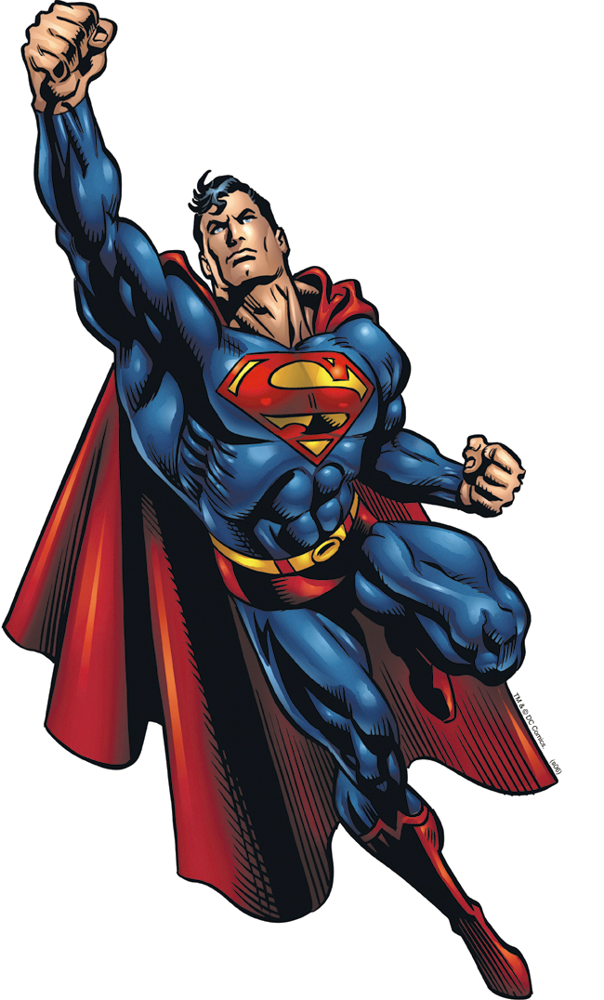

SuperMan - Home Page

Superman is a fictional superhero appearing in American comic books published by DC Comics. The character was created
by writer Jerry Siegel and artist Joe Shuster, high school students living in Cleveland, Ohio, in 1933. They sold Superman
to Detective Comics, the future DC Comics, in 1938. Superman debuted in Action Comics #1 (cover-dated June 1938) and subsequently
appeared in various radio serials, newspaper strips, television programs, films, and video games. With this success, Superman
helped to create the superhero archetype and establish its primacy within the American comic book. The character is also
referred to by such epithets as the Man of Steel, the Man of Tomorrow, and The Last Son of Krypton.
The origin story of Superman relates that he was born Kal-El on the alien planet Krypton, before being rocketed to Earth as
an infant by his scientist father Jor-El, moments before Krypton's destruction. Discovered and adopted by a Kansas farmer and
his wife, the child is raised as Clark Kent and imbued with a strong moral compass. Very early on he started to display various
superhuman abilities, which, upon reaching maturity, he resolved to use for the benefit of humanity through a secret "Superman" identity.